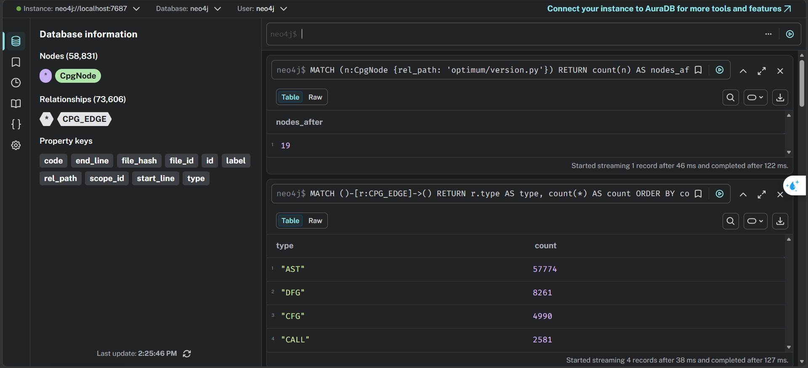
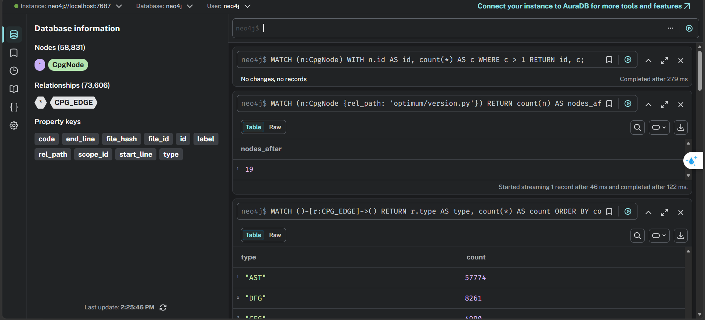

Task 6 — Idempotent Replay Verification#
The claim to prove: reprocessing a changed file updates the databases instead of duplicating them, and removing stale leftovers is deterministic. The whole chapter is one reproducible flow:
Baseline → modify exactly one file → reprocess exactly one file → Neo4j update → MongoDB upsert → checkpoint verification → duplicate/stale verification → final PASS
Every measurement is written to reports/evidence/ as JSON, so the numbers in
this chapter are artifacts of execution, not prose.
Step 1 — source-level proof, before touching any database#
import os, sys
os.chdir("..")
print("cwd:", os.getcwd())
cwd: /home/trong/lab04
!python src/replay/verify_replay.py ./optimum
(A) Deterministic re-parse of optimum/version.py
nodes identical: True (19 ids)
edges identical: True (23 ids)
file_hash identical: True
(B/C) Edit isolation on optimum/version.py
file_hash changed by edit : True
nodes surviving the edit : 19
nodes added+removed (delta): 14
unrelated file unchanged : True
-> stale nodes to delete on replay (old gen): 0 (removed by generation sweep)
-> new nodes to MERGE : 14
RESULT: PASS
The line to read carefully is nodes surviving the edit. The edit prepends a
comment, shifting every line number in the file, yet the original nodes keep
their identifiers. A line-based identifier scheme would report zero survivors and
duplicate the entire file downstream.
Step 2 — record the “before” state of both databases#
Step 2 — deterministic baseline reset#
A replay demonstration is only convincing if it starts from a known state.
scripts/reset_replay_target.py idempotently strips the lab edit (the header
comment and the _lab_replay_marker function) from the target file; the file
is then reprocessed and the generation sweep removes every element of the
previous (marker) generation from Neo4j — relationships first, then nodes,
because a stale edge between two surviving nodes would outlive a node-only
sweep. Re-running this notebook always converges to the same baseline.
!python scripts/reset_replay_target.py
!python src/discovery/discover_files.py --repo ./optimum --out reports/file_manifest.json | tail -1
!python src/parser/parser_service.py --manifest reports/file_manifest.json --repo ./optimum --only optimum/version.py --bootstrap localhost:9092 | tail -2
!sleep 25
!python src/replay/sweep.py --repo ./optimum --rel-path optimum/version.py --json-out reports/evidence/task6_reset_sweep.json
file : optimum/version.py
state : baseline (cleaned)
file_hash : ac342f9e8fd3f74b822e8d7399806be6f17b733b37e1a01ae24a486ba8d330ce
Manifest written -> reports/file_manifest.json
processed 1/1 files
Event counts: {'node': 5, 'edge': 4, 'metadata': 1, 'error': 0}
file : optimum/version.py
file_id : b3fc55405381fc8a
file_hash : ac342f9e8fd3f74b... (current generation)
nodes for this file : 19 (stale old-gen: 14)
edges for this file : 23 (stale old-gen: 19)
after sweep : 5 nodes (deleted 14), 4 edges (deleted 19)
stale nodes / edges (this file) : 0 / 0
duplicate node ids in DB : 0
duplicate edge ids in DB : 0
RESULT: PASS (idempotent)
json : reports/evidence/task6_reset_sweep.json
Step 3 — record the BEFORE state#
One snapshot with everything the verdict needs: per-file node/edge counts,
DB-wide totals, duplicate and stale counts for both nodes and edges, and the
MongoDB document (_id, file_hash, count) for the target file.
!sleep 20
!python scripts/replay_evidence.py --out reports/evidence/task6_before.json
{
"rel_path": "optimum/version.py",
"file_id": "b3fc55405381fc8a",
"file_hash_on_disk": "ac342f9e8fd3f74b822e8d7399806be6f17b733b37e1a01ae24a486ba8d330ce",
"nodes_file": 5,
"edges_file": 4,
"nodes_total": 58817,
"edges_total": 73587,
"duplicate_nodes": 0,
"duplicate_edges": 0,
"stale_nodes": 0,
"stale_edges": 0,
"mongo_document": {
"_id": "6a61bedeea4dfbfb3c244a8a",
"file_hash": "ac342f9e8fd3f74b822e8d7399806be6f17b733b37e1a01ae24a486ba8d330ce",
"num_ast_nodes": 5,
"rel_path": "optimum/version.py"
},
"mongo_count_for_file": 1,
"mongo_total_documents": 59
}
written -> reports/evidence/task6_before.json
Step 4 — modify exactly ONE file (idempotent edit)#
Two changes at once, on purpose: a header comment that shifts every line number in the file, and a new function appended at the end. A line-based identifier scheme would re-create every element; structural ids must update in place. The edit script only adds the marker when it is absent — running the cell twice cannot produce a double marker, which the repeated invocation below demonstrates.
!python scripts/reset_replay_target.py --add-marker
!python scripts/reset_replay_target.py --add-marker
!tail -5 optimum/optimum/version.py
file : optimum/version.py
state : marker present (added)
file_hash : e6df63ea2343b50e13f4aa7ab1ce9e76c5fb51d9e095f7a2cdcf2d5a649027d5
file : optimum/version.py
state : marker present (already)
file_hash : e6df63ea2343b50e13f4aa7ab1ce9e76c5fb51d9e095f7a2cdcf2d5a649027d5
def _lab_replay_marker(value):
temporary_value = value + 1
return temporary_value
Step 5 — refresh the manifest, reprocess ONLY that file#
processed 1/1 files and 'metadata': 1 are the point: the parser re-emits
one file and stays silent about the other 58.
!python src/discovery/discover_files.py --repo ./optimum --out reports/file_manifest.json | tail -1
!python src/parser/parser_service.py --manifest reports/file_manifest.json --repo ./optimum --only optimum/version.py --bootstrap localhost:9092
Manifest written -> reports/file_manifest.json
processed 1/1 files
Event counts: {'node': 19, 'edge': 23, 'metadata': 1, 'error': 0}
Step 6 — wait for the sinks to drain, then generation sweep#
This edit only adds elements, so MERGE refreshes every old id and the sweep
finds nothing stale — the interesting direction was Step 2, where removing the
marker left an entire stale generation behind. The sweep reports both
directions the same way: stale/duplicate counts for nodes and edges.
!sleep 25
!python src/replay/sweep.py --repo ./optimum --rel-path optimum/version.py --json-out reports/evidence/task6_sweep.json
file : optimum/version.py
file_id : b3fc55405381fc8a
file_hash : e6df63ea2343b50e... (current generation)
nodes for this file : 19 (stale old-gen: 0)
edges for this file : 23 (stale old-gen: 0)
after sweep : 19 nodes (deleted 0), 23 edges (deleted 0)
stale nodes / edges (this file) : 0 / 0
duplicate node ids in DB : 0
duplicate edge ids in DB : 0
RESULT: PASS (idempotent)
json : reports/evidence/task6_sweep.json
Step 7 — record the AFTER state#
!sleep 15
!python scripts/replay_evidence.py --out reports/evidence/task6_after.json
{
"rel_path": "optimum/version.py",
"file_id": "b3fc55405381fc8a",
"file_hash_on_disk": "e6df63ea2343b50e13f4aa7ab1ce9e76c5fb51d9e095f7a2cdcf2d5a649027d5",
"nodes_file": 19,
"edges_file": 23,
"nodes_total": 58831,
"edges_total": 73606,
"duplicate_nodes": 0,
"duplicate_edges": 0,
"stale_nodes": 0,
"stale_edges": 0,
"mongo_document": {
"_id": "6a61bedeea4dfbfb3c244a8a",
"file_hash": "e6df63ea2343b50e13f4aa7ab1ce9e76c5fb51d9e095f7a2cdcf2d5a649027d5",
"num_ast_nodes": 19,
"rel_path": "optimum/version.py"
},
"mongo_count_for_file": 1,
"mongo_total_documents": 59
}
written -> reports/evidence/task6_after.json
Step 8 — Spark checkpoint evidence, from the real log#
reports/evidence/spark_stream.log is the streaming job’s captured stdout.
The lines below show the resolved checkpoint location, a restart marker
followed by no replay of committed offsets, and micro-batches whose
document counts match the single-file reprocessing done in this chapter.
!grep -nE "=== spark|checkpoint location|batch [0-9]+: upserted" \
reports/evidence/spark_stream.log | tail -15
1:=== spark start 2026-07-23T09:30:36+00:00 ===
239:checkpoint location : file:///tmp/chk/cpg_metadata
247:batch 26: upserted 60 metadata docs
248:=== spark restart (checkpoint reuse test) 2026-07-23T09:31:57+00:00 ===
486:checkpoint location : file:///tmp/chk/cpg_metadata
494:batch 27: upserted 1 metadata docs
498:batch 28: upserted 1 metadata docs
502:batch 29: upserted 1 metadata docs
Step 9 — verification verdict#
Computed from the recorded evidence files, not typed in. Every condition must hold or the status is FAIL:
import json, re, pathlib
before = json.load(open("reports/evidence/task6_before.json"))
after = json.load(open("reports/evidence/task6_after.json"))
log = pathlib.Path("reports/evidence/spark_stream.log").read_text()
batches = re.findall(r"batch (\d+): upserted (\d+) metadata docs", log)
last_batch_docs = int(batches[-1][1]) if batches else None
checks = {
"file_hash_changed": before["file_hash_on_disk"] != after["file_hash_on_disk"],
"graph_changed": (before["nodes_file"], before["edges_file"])
!= (after["nodes_file"], after["edges_file"]),
"mongo_id_stable": before["mongo_document"]["_id"] == after["mongo_document"]["_id"],
"mongo_hash_updated": before["mongo_document"]["file_hash"] != after["mongo_document"]["file_hash"],
"mongo_single_document": after["mongo_count_for_file"] == 1,
"duplicate_nodes_zero": after["duplicate_nodes"] == 0,
"duplicate_edges_zero": after["duplicate_edges"] == 0,
"stale_nodes_zero": after["stale_nodes"] == 0,
"stale_edges_zero": after["stale_edges"] == 0,
"spark_last_batch_one_doc": last_batch_docs == 1,
}
verdict = {
"file_id": after["file_id"],
"file_path": after["rel_path"],
"file_hash_before": before["file_hash_on_disk"],
"file_hash_after": after["file_hash_on_disk"],
"nodes_before": before["nodes_file"], "nodes_after": after["nodes_file"],
"edges_before": before["edges_file"], "edges_after": after["edges_file"],
"nodes_total_after": after["nodes_total"],
"edges_total_after": after["edges_total"],
"mongodb_id_before": before["mongo_document"]["_id"],
"mongodb_id_after": after["mongo_document"]["_id"],
"mongodb_hash_before": before["mongo_document"]["file_hash"],
"mongodb_hash_after": after["mongo_document"]["file_hash"],
"mongodb_document_count": after["mongo_count_for_file"],
"duplicate_nodes": after["duplicate_nodes"],
"duplicate_edges": after["duplicate_edges"],
"stale_nodes": after["stale_nodes"],
"stale_edges": after["stale_edges"],
"spark_replay_documents": last_batch_docs,
"parser_processed_files": 1,
"checks": checks,
"status": "PASS" if all(checks.values()) else "FAIL",
}
json.dump(verdict, open("reports/evidence/task6_verification.json", "w"), indent=2)
w = max(len(k) for k in checks)
for k, v in checks.items():
print(f"{'PASS' if v else 'FAIL'} {k.ljust(w)}")
print(f"\nnodes {verdict['nodes_before']} -> {verdict['nodes_after']}, "
f"edges {verdict['edges_before']} -> {verdict['edges_after']}, "
f"spark replay batch = {verdict['spark_replay_documents']} doc(s)")
print("STATUS:", verdict["status"])
PASS file_hash_changed
PASS graph_changed
PASS mongo_id_stable
PASS mongo_hash_updated
PASS mongo_single_document
PASS duplicate_nodes_zero
PASS duplicate_edges_zero
PASS stale_nodes_zero
PASS stale_edges_zero
PASS spark_last_batch_one_doc
nodes 5 -> 19, edges 4 -> 23, spark replay batch = 1 doc(s)
STATUS: PASS
Database UI evidence#
Neo4j Browser after the replay and sweep — node count for the edited file, and the DB-wide duplicate check returning no rows:


Reflection#
What worked. The structural identifier design paid off exactly here. The
replay edit appends a function and shifts every line with a header comment;
a line-based id scheme would have re-created the whole file. Instead the
baseline’s 5 nodes / 4 edges were re-emitted with identical ids and MERGE
updated them in place: the file went to 19 nodes / 23 edges with zero
duplicate node ids and zero duplicate edge ids DB-wide, and MongoDB kept
exactly one document — same _id, new file_hash. The Spark log shows the
replay micro-batch carried exactly 1 document, resumed from the committed
checkpoint offset.
Where the sweep earns its keep. The forward replay (adding code) leaves
nothing stale — every old id is re-emitted, so MERGE refreshes them all. The
reset in Step 2 is the opposite direction: removing the marker means 14 nodes
and 19 edges of the marker generation are never re-emitted, and MERGE alone
would leave them in the graph forever. The generation sweep deletes them by
comparing each element’s file_hash to the current file hash — relationships
first, then nodes, because an edge between two surviving nodes would outlive a
node-only sweep (see reports/evidence/task6_reset_sweep.json).
Trade-off we accepted. The sweep is a separate step after the connector has drained rather than something the connector does itself. A Cypher sink statement cannot know that a file is “finished”, so delete-then-write inside the connector would race with in-flight messages. Running the sweep afterwards is slower but correct.